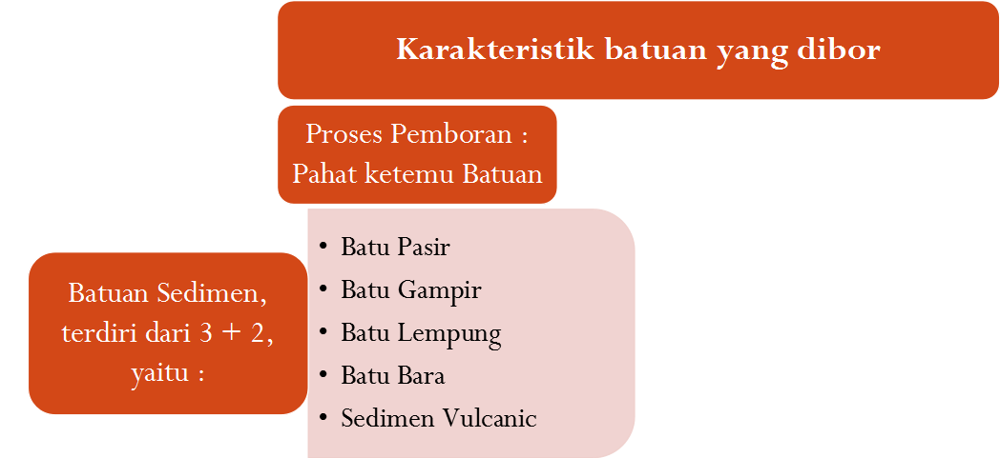
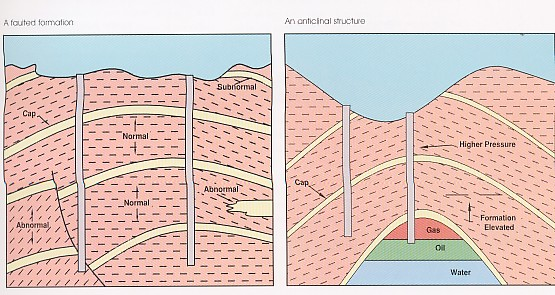

Materi Minggu Ini
- Jenis-jenis batuan yang umum ditembus saat pemboran
- Sifat fisik batuan: compressive strength, hardness, porositas, permeabilitas
- Tekanan formasi: normal, overpressure, underpressure, dan implikasinya
- Gradien temperatur formasi dan pengaruhnya terhadap perencanaan lumpur
Penjelasan Materi
Karakteristik Batuan sebagai Parameter Tetap
Karakteristik batuan merupakan parameter yang tidak dapat diubah (unalterable factor) karena merupakan bentukan alam, dan menjadi dasar penentuan parameter pemboran — sebab parameter mekanik dan hidrolik pemboran pada dasarnya dirancang untuk mengatasi kondisi alami batuan tersebut. Berdasarkan data karakteristik batuan dari sumur-sumur sebelumnya, dapat disusun program optimasi pemboran pada sumur berikutnya untuk mempercepat waktu pemboran dan menekan biaya.
Karakteristik batuan yang penting diperhatikan meliputi: densitas, porositas, saturasi dan permeabilitas, compressive strength, hardness, abrasiveness, elastisitas, drillability, tekanan formasi, tekanan rekah formasi, tekanan overburden, dan temperatur batuan.
Jenis Batuan Berdasarkan Kemudahan Ditembus
Berdasarkan kemudahannya ditembus mata bor, batuan digolongkan menjadi tiga kelompok:
- Batuan lunak — clay, shale lunak, batupasir uncosolidated–moderately consolidated (skala Mohs 1–3, compressive strength rendah, drillability tinggi); lebih cepat ditembus dengan blade drilling bit.
- Batuan medium — beberapa jenis shale, limestone dan dolomite yang porous, batupasir dengan sementasi lebih baik, dan gypsum (skala Mohs 4–7).
- Batuan keras — batuan terkonsolidasi baik seperti quartzitic sand, schist, silt stone dengan compressive strength besar; memerlukan bit bergigi pendek dan kuat.
Jenis batuan yang umum dijumpai antara lain clay, pasir lepas (loose sand), shale, silt, sandy shale, chalk, grit, sandstone, konglomerat, limestone/dolomite/anhydrite, quartzite, dan chert — masing-masing memerlukan strategi bit, WOB (weight on bit), RPM, dan sirkulasi lumpur yang berbeda.
Sifat Fisik Batuan
- Compressive strength — kemampuan batuan menahan beban tekan maksimum sebelum pecah; laju penembusan umumnya berbanding terbalik dengannya.
- Hardness & abrasiveness — diukur dengan skala Mohs (1=talk hingga 10=diamond); batuan dikelompokkan lunak (<4), sedang (4–7), keras (>7).
- Uniformity (keseragaman butir) — memengaruhi keawetan bit.
- Elastisitas — kemampuan batuan kembali ke bentuk semula setelah tekanan dihilangkan.
- Balling tendency — kecenderungan serbuk bor menempel pada bit, dipengaruhi komposisi mineral seperti clay dan bentonite.
- Porositas — fraksi ruang antar butir yang dapat menyimpan fluida formasi.
- Permeabilitas — ukuran kemudahan fluida mengalir melalui batuan, pertama kali dirumuskan secara empiris oleh Henry Darcy (1856).
Tekanan dan Temperatur Formasi
Tekanan formasi merupakan faktor penting yang, jika tidak dievaluasi dengan baik, dapat menimbulkan problem pemboran seperti loss circulation, kick, blowout, stuck pipe, dan hole instability. Berdasarkan besarnya, tekanan formasi digolongkan menjadi tekanan normal, abnormal, dan subnormal, dengan gradien tekanan normal berkisar 0.433–0.465 psi/ft.
Tekanan formasi dapat diprediksi melalui analisa seismik, korelasi sumur, analisa log, evaluasi parameter pemboran, data test/produksi, dan evaluasi saat pemboran. Tekanan abnormal umumnya disebabkan oleh kompaksi sedimen, sistem artesis, pengangkatan, lapisan garam, atau perbedaan densitas fluida.
Tekanan rekah formasi adalah tekanan yang menyebabkan batuan pecah; nilainya menjadi acuan agar densitas lumpur tidak melampaui batas ini sehingga terhindar dari loss circulation, dan diuji lewat leak-off test / integrity pressure test.
Temperatur formasi bertambah seiring kedalaman mengikuti gradien geothermis, rata-rata sekitar 2°F/ft (berkisar 0.5–4°F/ft tergantung konduktivitas termal batuan setempat).
Gambar & Ilustrasi
Diambil langsung dari slide PPT Chapter 2.

